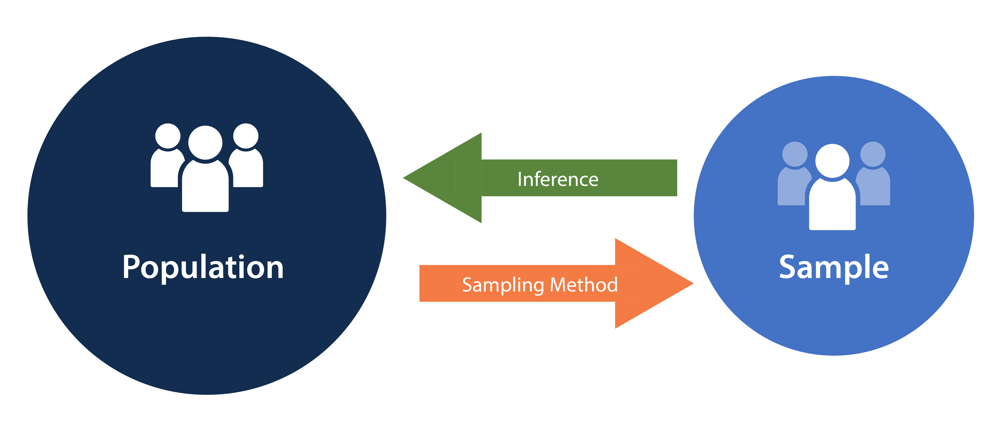
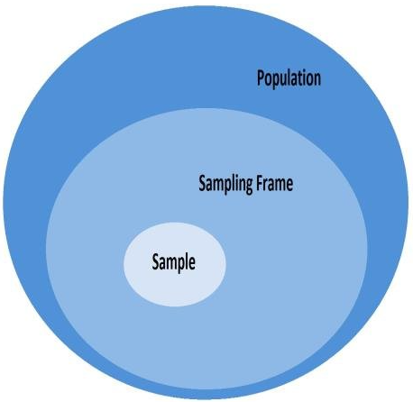
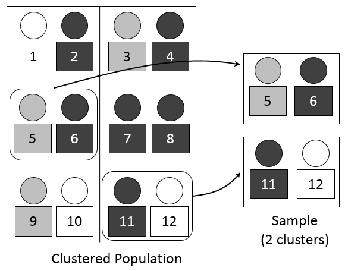

Workshop on Advanced Sampling Methodologies
Dr. Gianluca Boo, WorldPop, University of Southampton
2025-09-18
Agenda
- Introduction to Sampling Concepts
- Probability Sampling Methods
- Weighted Sampling & Unequal Probability Designs
- Practical Implementation in R
- Design Considerations & Summary
- Practical exercises
Sampling
- Definition: sampling is the process of selecting a subset (called a sample) from a larger population to estimate characteristics of that population.
- Purpose: enables inference when measuring the entire population is costly or impractical. This offers the followwing advantages:
- Cost-effective: sampling requires fewer resources than a full census.
- Feasibility: some populations cannot be fully measured.
- Timely insights: faster data collection for timely decision-making.

Key concepts of sampling (source: National Library of Medicine).
Key concepts
Population
- The entire set of elements (people, objects, events) you want to study.
- Provides the scope of inference for your study.
- Example: all university students in a country.
Sampling frame
- The list or mechanism used to identify and access members of the population.
- Ideally a sampling frame should be:
- Complete: covers all members of population.
- Accurate: no duplicates, no outdated entries.
- Accessible: researcher can reach listed units.
- Example: an official student enrollment database.

ℹ️ If the sampling frame does not fully represent the population, sampling bias may occur.
Key concepts
Sample
- A subset of the population selected for analysis.
- Used to make inferences about the population.
- Example: 1,000 students chosen from the national student population.
Sampling
- The process or method of selecting units from the population to form a sample.
- The goal is achieving a representative and unbiased sample.
- Example: students are selected randomly.
ℹ️ Sampling design formalizes the plan for selecting a representative sample.
Sampling design
- A sampling design defines how samples are chosen and the probability each unit has of being selected.
- Sampling design includes aspects like:
- Probability versus non-probability sampling
- Sampling technique
- Sample size
- Allocation strategies
- Bias and representativeness

ℹ️ In this workshop we will cover probability sampling only.
Simple random sampling
- Every possible subset of size n from a population N has an equal probability of being selected.
- Used when complete list of the population is available.

Simple random sampling (source: Wikipedia)
Simple random sampling
Sample mean \[ \bar{x} = \frac{1}{n} \sum_{i=1}^{n} x_i \]
Sample variance \[ s^2 = \frac{1}{n-1} \sum_{i=1}^{n} (x_i - \bar{x})^2 \]
Population mean \[ \mu = \frac{1}{N} \sum_{i=1}^{N} x_i \] Population variance \[ \sigma^2 = \frac{1}{N} \sum_{i=1}^{N} (x_i - \mu)^2 \]
\(x\): sampled values
\(\mu\): population mean
\(\sigma^2\): population variance
\(n\): sample size
\(N\): population size
ℹ️ The sample mean can be computed by substituting \(N\) with \(n\), while the sample variance by substituting \(N\) with \(n\) and \(n-1\) in the denominator.
Simple random sampling
Implementation in R
library(tidyverse) # Load tidyverse for data manipulation
set.seed(123) # Set seed for reproducibility
N <- 10000 # Define population size
pop <- data.frame(id = 1:N, # Create population dataframe with IDs
y = rlnorm(N, # Generate log-normal random values
meanlog = 2,
sdlog = 0.5))
n <- 500 # Define sample size
s_ids <- sample(pop$id, size = n, # Randomly select n IDs without replacement
replace = FALSE)
samp <- pop |> filter(pop$id %in% s_ids) # Extract sampled observations
ybar_hat <- mean(samp$y) # Sample mean of y
Y_hat <- N * ybar_hat # Estimate of population total (N * sample mean)
s2 <- var(samp$y) # Sample variance of y
var_ybar <- (1 - n/N) * s2 / n # Variance of sample mean with finite pop. correction
se_ybar <- sqrt(var_ybar) # Standard error of sample mean
list(ybar_hat = ybar_hat, # Return list with results:
Y_hat = Y_hat, # - Sample mean
se_ybar = se_ybar) # - Estimated population total
# - Standard error of sample meanℹ️ Try to run the code in your Script Editor.
Stratified sampling
- Population is divided into homogeneous subgroups (strata) and a simple random sample is drawn within each stratum.
- Improves efficiency by reducing variability within strata.

Stratified sampling (source: Wikipedia)
Stratified sampling
Sample mean: \[ \bar{x}_{st} = \sum_{h=1}^H W_h \bar{x}_h \] Approximate variance \[ \operatorname{Var}(\bar{x}_{st}) = \sum_{h=1}^H W_h^2 \frac{\sigma_h^2}{n_h} \left(1 - \frac{n_h}{N_h}\right) \] Population mean \[ \mu = \frac{1}{N} \sum_{h=1}^{H} \sum_{i=1}^{N_h} x_{hi} \] Population variance \[ \sigma^2 = \frac{1}{N} \sum_{h=1}^{H} \sum_{i=1}^{N_h} (x_{hi} - \mu)^2 \]
\(N_h\): size of stratum \(h\);
\(n_h\): sample size for stratum \(h\);
\(N\): total population size;
\(W_h=\dfrac{N_h}{N}\): population weight of \(h\),
\(f_h=\dfrac{n_h}{N_h}\): sampling fraction in \(h\),
\(\bar x_h\): sample mean in \(h\),
\(s_h^2=\): sample variance in \(h\).
Stratified sampling
Implementation in R
set.seed(7) # Set seed for reproducibility
H <- 3 # Number of strata
N_h <- c(4000, 3000, 3000) # Population sizes for each stratum
stratum <- rep(1:H, times = N_h) # Vector labeling each unit's stratum
pop <- data.frame(id = 1:sum(N_h), # Build full population dataset
h = stratum, # - stratum membership
y = c(rnorm(N_h[1], 50, 10), # - outcomes for stratum 1
rnorm(N_h[2], 60, 15), # - outcomes for stratum 2
rnorm(N_h[3], 55, 12))) # - outcomes for stratum 3
N <- nrow(pop) # Total population size
W_h <- N_h / N # Stratum weights (proportion of population)
n <- 600 # Desired total sample size
n_h <- round(n * W_h) # Allocate sample size per stratum (proportional allocation)
# Draw samples from each stratum
samp_list <- lapply(1:H, function(h){
ids <- which(pop$h == h) # Identify units in stratum h
pick <- sample(ids, size = n_h[h], # Randomly select n_h units without replacement
replace = FALSE)
pop[pick, ] # Return sampled data
})
samp <- do.call(rbind, samp_list) # Combine stratum samples into one dataset
ybar_h <- tapply(samp$y, samp$h, mean) # Compute sample mean within each stratum
Ybar_hat <- sum(W_h * ybar_h) # Weighted average of stratum means (overall estimate)
Ybar_hat # Print estimated population meanℹ️ Try to run the code in your Script Editor.
Cluster sampling
- Population is divided into clusters, often based on geography or natural groupings.
- A random sample of clusters is selected, and all (or a sample of) units within selected clusters are observed.

Cluster sampling (source: Wikipedia)
Cluster sampling
Cluster sample mean \[ \bar{x}_{cl} = \frac{1}{n_c} \sum_{c \in S} \bar{x}_c \] Approximate variance of \(\bar{x}_CL\): \[ \operatorname{Var}(\bar{x}_{cl}) = \frac{1}{n_c} \left(1 - \frac{n_c}{C}\right) S_c^2 \] Population mean \[ \mu = \frac{1}{N} \sum_{c=1}^{C} \sum_{i=1}^{N_c} x_{ci} \] Population variance \[ \sigma^2 = \frac{1}{N} \sum_{c=1}^{C} \sum_{i=1}^{N_c} (x_{ci} - \mu)^2 \]
\(N\): Population size
\(C\): Number of clusters in the population
\(N_c\): Size of cluster
\(n_c\): Number of clusters sampled
\(x_{ci}\): Value of the \(i\)-th element in cluster \(c\)
\(\bar{x}_c\): Mean of cluster \(c\)
\(\bar{x}_{cl}\): Mean of sampled clusters
\(\mu\): Population mean
\(\sigma^2\): Population variance
\(S_c^2\): Variance of cluster means
\(S\): Set of sampled clusters
Cluster sampling
Implementation in R
set.seed(11) # Set random seed for reproducibility
J <- 100 # Number of clusters in the population
mbar <- 20 # Average cluster size
rho <- 0.15 # Intra-cluster correlation (ICC)
M_j <- rpois(J, mbar-1) + 1 # Cluster sizes (Poisson around mbar)
mu <- 50 # Overall population mean
sigma2 <- 100 # Total variance of outcomes
tau2 <- rho * sigma2 # Between-cluster variance component
sigma2_within <- (1-rho) * sigma2 # Within-cluster variance component
cluster_effect <- rnorm(J, 0, sqrt(tau2)) # Random cluster effects ~ N(0, tau2)
data <- do.call(rbind, lapply(1:J, function(j){ # Generate population data
m <- M_j[j] # Size of cluster j
y <- mu + cluster_effect[j] + # Mean + cluster effect +
rnorm(m, 0, sqrt(sigma2_within))# individual error within cluster
data.frame(cluster=j, y=y) # Store results in dataframe
}))
n_c <- 20 # Number of clusters to sample
sel_clust <- sample(1:J, n_c) # Randomly select clusters
samp <- subset(data, cluster %in% sel_clust) # Extract all units in sampled clusters
t_j <- aggregate(y ~ cluster, samp, sum) # Cluster totals of y in sample
M_sel <- aggregate(y ~ cluster, samp, length)# Cluster sizes in sample
names(M_sel)[2] <- "m"
Y_hat <- (J / n_c) * sum(t_j$y) # Estimated population total (expansion factor J/n_c)
N_hat <- (J / n_c) * sum(M_sel$m) # Estimated population size
Ybar_hat <- Y_hat / N_hat # Estimated population mean
Ybar_hat # Print estimateℹ️ Try to run the code in your Script Editor.
Weighted sampling
- Each unit in the population is assigned a weight reflecting its probability of selection.
- Units with higher weights have greater influence on the estimate.
- Often used in complex surveys or unequal probability sampling designs.
Probability weighted sampling.
Weighted sampling
Population mean (weighted) \[ \mu = \frac{\sum_{i=1}^{N} w_i x_i}{\sum_{i=1}^{N} w_i} \]
Population variance (weighted) \[ \sigma^2 = \frac{\sum_{i=1}^{N} w_i (x_i - \mu)^2}{\sum_{i=1}^{N} w_i} \]
Weighted sample mean \[ \bar{x}_w = \frac{\sum_{i \in S} w_i x_i}{\sum_{i \in S} w_i} \]
Approximate variance of \(\bar{x}_w\) \[ \operatorname{Var}(\bar{x}_w) \approx \sum_{i \in S} \frac{w_i^2}{(\sum_{i \in S} w_i)^2} (x_i - \bar{x}_w)^2 \]
\(N\): Population size
\(x_i\): Value of the \(i\)-th element in the population
\(w_i\):Weight of element \(i\) (proportional to size, often \(w_i \propto\) cluster or unit size)
\(S\): Set of sampled elements
\(\bar{x}\_w\): Weighted sample mean
\(\mu\): Population mean (weighted)
\(\sigma^2\): Population variance (weighted)
\(\operatorname{Var}(\bar{x}\_w)\): Approximate variance of weighted sample mean
Weighted sampling
Implementation in R
set.seed(123) # Fix seed for reproducibility
N <- 1000 # Population size
x <- runif(N, 1, 10) # Size measure
y <- 5 + 2*x + rnorm(N) # Outcome correlated with x
pop <- data.frame(id=1:N, x=x, y=y) # Store in a dataframe
n <- 100 # Sample size
srs <- pop[sample(1:N, n), ] # Draw SRS without replacement
mean_srs <- mean(srs$y) # Sample mean (unweighted)
mean(pop$y) # True population mean (for comparison)
prob <- x / sum(x) # Selection probs proportional to x
samp_ids <- sample(1:N, n, prob=prob) # Draw weighted sample
pps <- pop[samp_ids, ] # Extract sampled units
pps$w <- 1/prob[samp_ids] # Compute weights = 1 / inclusion prob
mean_pps <- sum(pps$w * pps$y) / sum(pps$w) # Weighted mean (Horvitz–Thompson estimator)
mean_srs # Unweighted mean from SRS
mean_pps # Weighted mean from PPS
mean(pop$y) # True population meanℹ️ Try to run the code in your Script Editor.
Multistage sampling
- Sampling is conducted in two or more stages, selecting units at each stage.
- Common design:
- Stage 1: Randomly sample clusters (e.g., schools).
- Stage 2: Randomly sample elements within clusters (e.g., students).
- Useful when a complete list of all population units is unavailable.
Multistage sampling.
Multistage sampling
Population mean \[ \mu = \frac{1}{N} \sum_{c=1}^{C} \sum_{i=1}^{N_c} x_{ci} \]
Population variance\[ \sigma^2 = \frac{1}{N} \sum_{c=1}^{C} \sum_{i=1}^{N_c} (x_{ci} - \mu)^2 \]
2-stage sample mean: \[ \bar{x}_{ms} = \frac{1}{n_c} \sum_{c \in S} \bar{x}_c,\ \ \ where\ \ \bar{x}_c = \frac{1}{n_{ci}} \sum_{i \in S_c} x_{ci} \] Approximate variance of \(\bar{x}_{ms}\): \[ \operatorname{Var}(\bar{x}_{ms}) \approx \frac{1}{n_c} \left(1 - \frac{n_c}{C}\right) S_c^2 + \frac{1}{n_c^2} \sum_{c \in S} \frac{S_{ci}^2}{n_{ci}} \]
\(N\) Total population size
\(C\): Number of clusters in population
\(N_c\): Size of cluster $c $
\(n_c\): Number of clusters sampled
\(S\): Set of sampled clusters
\(x_{ci}\): Value of element \(i\) in \(c\)
\(S_c\): ariance of cluster means in population
\(S_{ci}^2\): Variance of elements within sampled \(c\)
\(n_{ci}\): Number of elements sampled from $c $
\(\bar{x}_c\): Mean of sampled elements in \(c\)
Multistage sampling
Implementation in R
set.seed(42) # Ensure reproducibility
# --- Stage 0: Define population ---
J <- 50 # Number of primary clusters (e.g., schools)
mbar <- 30 # Average number of units per cluster (e.g., students)
mu <- 60 # Overall population mean
sigma2 <- 100 # Total variance
# Generate cluster sizes (first-stage)
M_j <- rpois(J, mbar-1) + 1 # Random cluster sizes around mbar
# Generate cluster-level effects
tau2 <- 0.2 * sigma2 # Between-cluster variance
sigma2_within <- sigma2 - tau2 # Within-cluster variance
cluster_effect <- rnorm(J, 0, sqrt(tau2)) # Random cluster effects
# Generate full population data
population <- do.call(rbind, lapply(1:J, function(j){
m <- M_j[j] # Size of cluster j
y <- mu + cluster_effect[j] + # Population mean + cluster effect +
rnorm(m, 0, sqrt(sigma2_within)) # individual random variation
data.frame(cluster = j, y = y) # Return data for cluster j
}))
# --- Stage 1: Sample clusters (PSUs) ---
n_clusters <- 10 # Number of clusters to sample
sampled_clusters <- sample(1:J, n_clusters, replace = FALSE) # Random cluster selection
stage1_sample <- subset(population, cluster %in% sampled_clusters) # Keep selected clusters
# --- Stage 2: Sample units within sampled clusters (SSUs) ---
n_within <- 5 # Number of units to sample per cluster
stage2_sample <- do.call(rbind, lapply(sampled_clusters, function(j){
cluster_data <- subset(stage1_sample, cluster == j) # Units in cluster j
cluster_data[sample(1:nrow(cluster_data), n_within), ] # Randomly sample n_within units
}))
# --- Estimate population mean ---
cluster_sizes <- aggregate(y ~ cluster, stage2_sample, length) # Sampled units per cluster
cluster_totals <- aggregate(y ~ cluster, stage2_sample, sum) # Sum of y per cluster
Y_hat <- (J / n_clusters) * sum(cluster_totals$y) # Expand cluster totals to population total
N_hat <- (J / n_clusters) * sum(cluster_sizes$y) # Approximate population size
Ybar_hat <- Y_hat / N_hat # Estimated population mean
Ybar_hat # Print estimated meanℹ️ Try to run the code in your Script Editor.
Summary Table
| Sampling Method | Key Characteristics | Strengths | Limitations |
|---|---|---|---|
| Simple Random | Every unit has an equal chance; requires full sampling frame | Unbiased; easy to implement | Inefficient for large or dispersed populations; ignores subgroups |
| Stratified | Population divided into homogeneous strata; random sample within each stratum | Higher precision; ensures subgroup representation | Requires stratum info for all units; complex analysis |
| Cluster | Population divided into clusters; some clusters randomly selected | Cost-effective; useful for large/geographic populations | Higher variance if clusters are homogeneous |
| Weighted | Units sampled with unequal probabilities; weights used in estimation | Adjusts for unequal probabilities; enables oversampling | Requires accurate weights; complex variance estimation |
| Multistage | Sampling occurs in two or more stages (e.g., clusters and elements) | Logistically efficient; scalable | Can increase variance; complex design and analysis |
| Non-Probability | Units selected based on convenience or judgment, not randomization | Easy, fast, cheap | Cannot generalize to population; prone to bias |
Sampling Design
Key considerations
- Define Population & Objectives
- Establish Reliable Sampling Frame
- Choose Method Aligned with Objectives & Resources
- Calculate Appropriate Sample Size
- Minimize Bias & Sampling Error
- Document Design & Limitations Thoroughly
Take home
- Sampling allows inference from a subset when a full census is impractical.
- Probability sampling ensures representativeness and enables unbiased estimates.
- Stratification and weighting improve precision and adjust for unequal probabilities.
- Cluster and multistage sampling enhance feasibility for large or dispersed populations.
- Careful design, sample size calculation, and bias minimization are essential for reliable results.
References
Särndal, C.-E., Swensson, B., & Wretman, J. (1992). Model Assisted Survey Sampling. Springer. https://link.springer.com/book/10.1007/978-1-4612-0919-5
Lohr, S. L. (2019). Sampling: Design and Analysis (2nd edition). Chapman & Hall/CRC. https://www.crcpress.com/Sampling-Design-and-Analysis-Second-Edition/Lohr/p/book/9780367332323
Lumley, T. (2010). Complex Surveys: A Guide to Analysis Using R. Wiley. https://www.wiley.com/en-us/Complex+Surveys%3A+A+Guide+to+Analysis+Using+R-p-9780470589928
R Core Team. (2025). R: A Language and Environment for Statistical Computing. R Foundation for Statistical Computing, Vienna, Austria. https://www.R-project.org
Lumley, T., & Scott, A. (2023). survey: Analysis of Complex Survey Samples. R package version 4.2-3. https://cran.r-project.org/package=survey
Exercise
Please download the R script with exercises from GitHub and try to complete it.